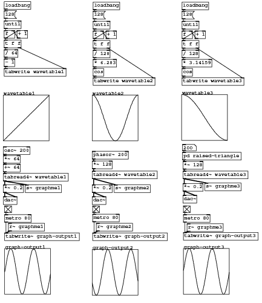
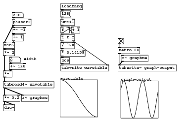
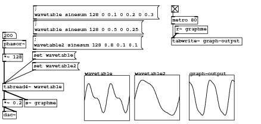
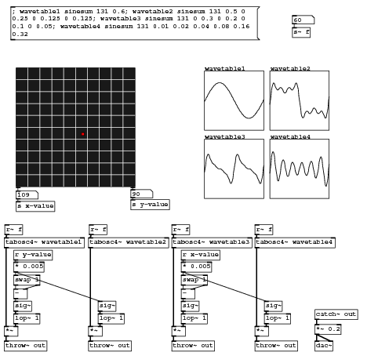
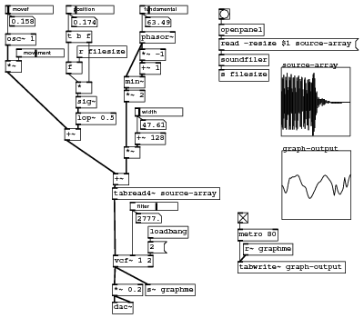

Code examples for “Designing Sound” textbook
Chapter 18: Technique 2 - Table Lookup
Comparison of wave table and shaping methods

#N canvas 59 58 569 659 10; #N canvas 0 0 450 300 graph1 0; #X array wavetable2 128 float 1; #A 0 1 0.998796 0.995185 0.989177 0.980786 0.970033 0.956943 0.941547 0.923884 0.903995 0.881928 0.857737 0.831479 0.803219 0.773023 0.740966 0.707123 0.671577 0.634413 0.595721 0.555594 0.514129 0.471425 0.427585 0.382716 0.336924 0.290321 0.243018 0.19513 0.146772 0.0980603 0.0491125 4.63287e-05 -0.04902 -0.0979681 -0.14668 -0.195039 -0.242928 -0.290232 -0.336837 -0.38263 -0.427501 -0.471343 -0.514049 -0.555517 -0.595647 -0.634342 -0.671508 -0.707058 -0.740903 -0.772964 -0.803164 -0.831428 -0.857689 -0.881884 -0.903955 -0.923849 -0.941516 -0.956916 -0.97001 -0.980768 -0.989164 -0.995176 -0.998791 -1 -0.9988 -0.995194 -0.989191 -0.980805 -0.970056 -0.95697 -0.941579 -0.923919 -0.904034 -0.881972 -0.857784 -0.831531 -0.803274 -0.773082 -0.741028 -0.707189 -0.671646 -0.634485 -0.595796 -0.555672 -0.514208 -0.471506 -0.427669 -0.382801 -0.337011 -0.29041 -0.243108 -0.195221 -0.146864 -0.0981527 -0.049205 -0.000139225 0.0489273 0.097876 0.146589 0.194948 0.242838 0.290144 0.336749 0.382544 0.427418 0.471261 0.51397 0.55544 0.595572 0.63427 0.67144 0.706992 0.740841 0.772906 0.803108 0.831376 0.857642 0.881841 0.903916 0.923813 0.941485 0.956889 0.969988 0.98075 0.98915 0.995167 0.998786; #X coords 0 1 127 -1 100 100 1; #X restore 200 206 graph; #N canvas 0 0 450 300 graph3 0; #X array graph-output2 441 float 0; #X coords 0 1 440 -1 100 100 1; #X restore 200 543 graph; #X obj 201 466 metro 80; #X obj 201 448 tgl 15 0 empty empty empty 0 -6 0 8 -262144 -1 -1 1 1; #X obj 202 66 f; #X obj 230 66 + 1; #X obj 202 45 until; #X obj 202 87 t f f; #X msg 202 23 128; #X obj 202 108 / 128; #X obj 202 148 cos; #X obj 202 3 loadbang; #X obj 200 428 dac~; #X obj 200 402 *~ 0.2; #X obj 200 350 *~ 128; #X obj 202 128 * 6.283; #N canvas 0 0 450 300 graph3 0; #X array graph-output1 441 float 0; #X coords 0 1 440 -1 100 100 1; #X restore 9 541 graph; #X obj 9 467 metro 80; #X obj 9 448 tgl 15 0 empty empty empty 0 -6 0 8 -262144 -1 -1 1 1 ; #X obj 200 329 phasor~ 200; #X obj 6 428 dac~; #X obj 6 402 *~ 0.2; #N canvas 0 0 450 300 graph1 0; #X array wavetable1 128 float 1; #A 0 -1 -0.984375 -0.96875 -0.953125 -0.9375 -0.921875 -0.90625 -0.890625 -0.875 -0.859375 -0.84375 -0.828125 -0.8125 -0.796875 -0.78125 -0.765625 -0.75 -0.734375 -0.71875 -0.703125 -0.6875 -0.671875 -0.65625 -0.640625 -0.625 -0.609375 -0.59375 -0.578125 -0.5625 -0.546875 -0.53125 -0.515625 -0.5 -0.484375 -0.46875 -0.453125 -0.4375 -0.421875 -0.40625 -0.390625 -0.375 -0.359375 -0.34375 -0.328125 -0.3125 -0.296875 -0.28125 -0.265625 -0.25 -0.234375 -0.21875 -0.203125 -0.1875 -0.171875 -0.15625 -0.140625 -0.125 -0.109375 -0.09375 -0.078125 -0.0625 -0.046875 -0.03125 -0.015625 0 0.015625 0.03125 0.046875 0.0625 0.078125 0.09375 0.109375 0.125 0.140625 0.15625 0.171875 0.1875 0.203125 0.21875 0.234375 0.25 0.265625 0.28125 0.296875 0.3125 0.328125 0.34375 0.359375 0.375 0.390625 0.40625 0.421875 0.4375 0.453125 0.46875 0.484375 0.5 0.515625 0.53125 0.546875 0.5625 0.578125 0.59375 0.609375 0.625 0.640625 0.65625 0.671875 0.6875 0.703125 0.71875 0.734375 0.75 0.765625 0.78125 0.796875 0.8125 0.828125 0.84375 0.859375 0.875 0.890625 0.90625 0.921875 0.9375 0.953125 0.96875 0.984375; #X coords 0 1 127 -1 100 100 1; #X restore 6 206 graph; #X obj 8 65 f; #X obj 36 65 + 1; #X obj 8 44 until; #X obj 8 86 t f f; #X msg 8 22 128; #X obj 8 2 loadbang; #X obj 6 319 osc~ 200; #X obj 8 107 / 64; #X obj 8 127 - 1; #X obj 6 338 *~ 64; #X obj 6 357 +~ 64; #N canvas 0 0 450 300 graph1 0; #X array wavetable3 128 float 1; #A 0 1 0.999699 0.998795 0.99729 0.995185 0.99248 0.989177 0.985278 0.980785 0.975702 0.970031 0.963776 0.95694 0.949528 0.941544 0.932993 0.92388 0.91421 0.903989 0.893224 0.881921 0.870087 0.857729 0.844854 0.83147 0.817585 0.803208 0.788347 0.773011 0.757209 0.740952 0.724248 0.707107 0.689541 0.671559 0.653173 0.634394 0.615232 0.5957 0.575809 0.555571 0.534998 0.514104 0.492899 0.471398 0.449612 0.427556 0.405242 0.382684 0.359896 0.336891 0.313683 0.290286 0.266714 0.242981 0.219102 0.195091 0.170963 0.146732 0.122412 0.0980183 0.0735658 0.0490688 0.0245424 1.26759e-06 -0.0245399 -0.0490663 -0.0735633 -0.0980158 -0.122409 -0.146729 -0.170961 -0.195089 -0.2191 -0.242979 -0.266711 -0.290283 -0.31368 -0.336888 -0.359894 -0.382682 -0.40524 -0.427554 -0.44961 -0.471395 -0.492897 -0.514101 -0.534996 -0.555569 -0.575807 -0.595698 -0.61523 -0.634392 -0.653171 -0.671558 -0.689539 -0.707105 -0.724246 -0.74095 -0.757208 -0.773009 -0.788345 -0.803206 -0.817584 -0.831468 -0.844853 -0.857728 -0.870086 -0.88192 -0.893223 -0.903988 -0.914209 -0.923879 -0.932992 -0.941543 -0.949528 -0.95694 -0.963775 -0.970031 -0.975702 -0.980785 -0.985277 -0.989176 -0.992479 -0.995184 -0.99729 -0.998795 -0.999699; #X coords 0 1 127 -1 100 100 1; #X restore 395 205 graph; #X floatatom 397 314 4 0 0 0 - - -; #N canvas 0 0 450 300 graph3 0; #X array graph-output3 441 float 0; #X coords 0 1 440 -1 100 100 1; #X restore 399 541 graph; #X obj 399 467 metro 80; #X obj 399 448 tgl 15 0 empty empty empty 0 -6 0 8 -262144 -1 -1 1 1; #X obj 396 66 f; #X obj 424 66 + 1; #X obj 396 45 until; #X obj 396 87 t f f; #X msg 396 23 128; #X obj 396 108 / 128; #X obj 396 148 cos; #X obj 396 128 * 3.14159; #X obj 396 3 loadbang; #X obj 398 425 dac~; #X obj 398 399 *~ 0.2; #X obj 446 398 s~ graphme3; #X obj 407 487 r~ graphme3; #X obj 399 506 tabwrite~ graph-output3; #X obj 396 168 tabwrite wavetable3; #X obj 398 372 tabread4~ wavetable3; #X obj 8 148 tabwrite wavetable1; #X obj 6 377 tabread4~ wavetable1; #X obj 54 402 s~ graphme1; #X obj 17 486 r~ graphme1; #X obj 9 507 tabwrite~ graph-output1; #X obj 202 168 tabwrite wavetable2; #X obj 200 372 tabread4~ wavetable2; #X obj 248 402 s~ graphme2; #X obj 209 486 r~ graphme2; #X obj 201 507 tabwrite~ graph-output2; #N canvas 0 0 450 300 raised-triangle 0; #X obj 115 58 phasor~; #X obj 92 120 min~; #X obj 115 80 *~ -1; #X obj 115 100 +~ 1; #X obj 92 140 *~ 2; #X obj 115 35 inlet; #X obj 91 163 outlet~; #X connect 0 0 1 0; #X connect 0 0 2 0; #X connect 1 0 4 0; #X connect 2 0 3 0; #X connect 3 0 1 1; #X connect 4 0 6 0; #X connect 5 0 0 0; #X restore 397 331 pd raised-triangle; #X obj 398 351 *~ 128; #X connect 2 0 64 0; #X connect 3 0 2 0; #X connect 4 0 5 0; #X connect 4 0 7 0; #X connect 5 0 4 1; #X connect 6 0 4 0; #X connect 7 0 9 0; #X connect 7 1 60 1; #X connect 8 0 6 0; #X connect 9 0 15 0; #X connect 10 0 60 0; #X connect 11 0 8 0; #X connect 13 0 12 0; #X connect 13 0 12 1; #X connect 14 0 61 0; #X connect 15 0 10 0; #X connect 17 0 59 0; #X connect 18 0 17 0; #X connect 19 0 14 0; #X connect 21 0 20 0; #X connect 21 0 20 1; #X connect 23 0 24 0; #X connect 23 0 26 0; #X connect 24 0 23 1; #X connect 25 0 23 0; #X connect 26 0 30 0; #X connect 26 1 55 1; #X connect 27 0 25 0; #X connect 28 0 27 0; #X connect 29 0 32 0; #X connect 30 0 31 0; #X connect 31 0 55 0; #X connect 32 0 33 0; #X connect 33 0 56 0; #X connect 35 0 65 0; #X connect 37 0 52 0; #X connect 38 0 37 0; #X connect 39 0 40 0; #X connect 39 0 42 0; #X connect 40 0 39 1; #X connect 41 0 39 0; #X connect 42 0 44 0; #X connect 42 1 53 1; #X connect 43 0 41 0; #X connect 44 0 46 0; #X connect 45 0 53 0; #X connect 46 0 45 0; #X connect 47 0 43 0; #X connect 49 0 48 0; #X connect 49 0 48 1; #X connect 51 0 52 0; #X connect 54 0 49 0; #X connect 54 0 50 0; #X connect 56 0 21 0; #X connect 56 0 57 0; #X connect 58 0 59 0; #X connect 61 0 13 0; #X connect 61 0 62 0; #X connect 63 0 64 0; #X connect 65 0 66 0; #X connect 66 0 54 0;
Download wavetable1.pd.
Wavetable 2

#N canvas 13 2 524 473 10; #X obj 201 37 phasor~; #X obj 178 204 *~; #N canvas 0 0 450 300 graph3 0; #X array graph-output 441 float 0; #X coords 0 1 440 -1 100 100 1; #X restore 407 210 graph; #X obj 194 184 +~ 128; #X obj 178 102 min~; #X obj 343 324 metro 80; #X obj 343 300 tgl 15 0 empty empty empty 0 -6 0 8 -262144 -1 -1 1 1; #X obj 201 62 *~ -1; #X obj 201 82 +~ 1; #X obj 343 371 tabwrite~ graph-output; #X obj 161 430 dac~; #X obj 161 404 *~ 0.2; #X obj 351 345 r~ graphme; #X obj 209 404 s~ graphme; #X obj 178 122 *~ 2; #X obj 316 26 openpanel; #X obj 316 70 soundfiler; #X obj 316 4 bng 15 250 50 0 empty empty empty 0 -6 0 8 -262144 -1 -1; #N canvas 0 0 450 300 graph2 0; #X array source-array 12699 float 2; #X coords 0 1 12699 -1 100 100 1; #X restore 406 89 graph; #X msg 316 47 read -resize \$1 source-array; #X obj 316 92 s filesize; #X obj 161 264 tabread4~ source-array; #X obj 108 155 lop~ 0.5; #X obj 108 131 sig~; #X obj 162 243 +~; #X obj 97 -1 hsl 64 12 0 1 0 0 empty empty position 7 6 1 8 -262144 -1 -1 1100 1; #X obj 94 36 t b f; #X obj 108 110 *; #X obj 94 81 f; #X obj 110 58 r filesize; #X obj 92 178 +~; #X obj 6 79 *~; #X obj 25 62 hsl 64 12 0 100 0 0 empty empty movement 7 6 1 8 -262144 -1 -1 2500 1; #X obj 6 40 osc~ 1; #X obj 9 -1 hsl 64 12 0 10 0 0 empty empty movef 7 6 1 8 -262144 -1 -1 100 1; #X floatatom 12 15 5 0 0 0 - - -; #X floatatom 102 16 5 0 0 0 - - -; #X obj 162 362 vcf~ 1 2; #X obj 197 148 hsl 64 12 0 1000 0 0 empty empty width 7 6 1 8 -262144 -1 -1 300 1; #X floatatom 202 165 5 0 0 0 - - -; #X obj 204 -1 hsl 64 12 0 400 0 0 empty empty fundamental 3 6 1 8 -262144 -1 -1 1000 1; #X floatatom 209 16 5 0 0 0 - - -; #X obj 190 285 hsl 64 12 0 5000 0 0 empty empty filter 7 6 1 8 -262144 -1 -1 3500 1; #X floatatom 195 301 5 0 0 0 - - -; #X obj 213 320 loadbang; #X msg 213 342 2; #X connect 0 0 4 0; #X connect 0 0 7 0; #X connect 1 0 24 1; #X connect 3 0 1 1; #X connect 4 0 14 0; #X connect 5 0 9 0; #X connect 6 0 5 0; #X connect 7 0 8 0; #X connect 8 0 4 1; #X connect 11 0 10 0; #X connect 11 0 10 1; #X connect 12 0 9 0; #X connect 14 0 1 0; #X connect 15 0 19 0; #X connect 16 0 20 0; #X connect 17 0 15 0; #X connect 19 0 16 0; #X connect 21 0 37 0; #X connect 22 0 30 1; #X connect 23 0 22 0; #X connect 24 0 21 0; #X connect 25 0 26 0; #X connect 25 0 36 0; #X connect 26 0 28 0; #X connect 26 1 27 1; #X connect 27 0 23 0; #X connect 28 0 27 0; #X connect 29 0 28 1; #X connect 30 0 24 0; #X connect 31 0 30 0; #X connect 32 0 31 1; #X connect 33 0 31 0; #X connect 34 0 33 0; #X connect 34 0 35 0; #X connect 37 0 11 0; #X connect 37 0 13 0; #X connect 38 0 39 0; #X connect 38 0 3 0; #X connect 40 0 41 0; #X connect 40 0 0 0; #X connect 42 0 43 0; #X connect 42 0 37 1; #X connect 44 0 45 0; #X connect 45 0 37 2;
Download wavetable2.pd.
Wavetable filling using sinesum

#N canvas 71 98 575 271 10; #N canvas 0 0 450 300 graph1 0; #X array wavetable 131 float 1; #A 0 -0.0977811 0 0.0977811 0.193216 0.284035 0.368118 0.443565 0.508755 0.562393 0.603553 0.631701 0.646705 0.648828 0.638717 0.617363 0.586064 0.546365 0.500001 0.448821 0.394723 0.339578 0.285164 0.233094 0.184766 0.14131 0.103554 0.0720009 0.0468157 0.0278313 0.0145653 0.00624993 0.00187437 0.000236008 4.67139e-18 -0.00023597 -0.00187422 -0.0062496 -0.0145647 -0.0278305 -0.0468145 -0.0719994 -0.103552 -0.141308 -0.184763 -0.233091 -0.285161 -0.339576 -0.39472 -0.448818 -0.499998 -0.546363 -0.586062 -0.617362 -0.638716 -0.648828 -0.646705 -0.631703 -0.603555 -0.562395 -0.508758 -0.443569 -0.368122 -0.284039 -0.193221 -0.0977863 -5.30718e-06 0.0977758 0.193211 0.28403 0.368114 0.443562 0.508751 0.56239 0.603551 0.6317 0.646704 0.648828 0.638717 0.617364 0.586066 0.546368 0.500003 0.448823 0.394726 0.339581 0.285167 0.233097 0.184768 0.141312 0.103556 0.0720025 0.0468169 0.0278322 0.0145658 0.00625026 0.00187452 0.000236046 1.26127e-16 -0.000235932 -0.00187407 -0.00624927 -0.0145641 -0.0278296 -0.0468133 -0.0719979 -0.10355 -0.141305 -0.184761 -0.233089 -0.285158 -0.339573 -0.394717 -0.448815 -0.499995 -0.546361 -0.58606 -0.61736 -0.638715 -0.648828 -0.646706 -0.631704 -0.603557 -0.562398 -0.508761 -0.443573 -0.368127 -0.284044 -0.193226 -0.0977916 -1.06144e-05 0.0977706; #X coords 0 1 130 -1 100 100 1; #X restore 185 166 graph; #X obj 4 88 phasor~; #X floatatom 4 70 4 0 0 0 - - -; #N canvas 0 0 450 300 graph3 0; #X array graph-output 441 float 0; #X coords 0 1 440 -1 100 100 1; #X restore 417 165 graph; #X obj 378 35 metro 80; #X obj 378 11 tgl 15 0 empty empty empty 0 -6 0 8 -262144 -1 -1 1 1 ; #X obj 4 183 tabread4~ wavetable; #X obj 378 82 tabwrite~ graph-output; #X obj 4 245 dac~; #X obj 4 219 *~ 0.2; #X obj 386 56 r~ graphme; #X obj 52 219 s~ graphme; #X msg 72 44 \; wavetable sinesum 128 0 0.5 0 0.25; #X msg 72 11 \; wavetable sinesum 128 0 0.1 0 0.2 0 0.3; #N canvas 0 0 450 300 graph1 0; #X array wavetable2 131 float 1; #A 0 -0.0637288 0 0.0637288 0.126951 0.189168 0.249897 0.308679 0.365086 0.418724 0.469245 0.516348 0.559783 0.599354 0.634922 0.666408 0.693785 0.717086 0.736396 0.751849 0.763626 0.771949 0.777073 0.779282 0.778882 0.776195 0.771546 0.765264 0.75767 0.74907 0.73975 0.729971 0.719963 0.709921 0.7 0.690317 0.680945 0.671914 0.663213 0.65479 0.646556 0.638386 0.630125 0.621593 0.612589 0.602898 0.592297 0.580561 0.56747 0.552813 0.536397 0.51805 0.497629 0.475021 0.450148 0.422971 0.39349 0.361748 0.327826 0.291847 0.253974 0.214402 0.173363 0.131114 0.0879354 0.0441278 2.38823e-06 -0.0441231 -0.0879307 -0.131109 -0.173359 -0.214398 -0.253969 -0.291843 -0.327822 -0.361744 -0.393487 -0.422968 -0.450145 -0.475018 -0.497627 -0.518048 -0.536395 -0.552811 -0.567469 -0.58056 -0.592296 -0.602897 -0.612588 -0.621592 -0.630124 -0.638385 -0.646555 -0.65479 -0.663212 -0.671913 -0.680944 -0.690316 -0.699999 -0.70992 -0.719962 -0.72997 -0.739749 -0.749069 -0.757669 -0.765264 -0.771545 -0.776194 -0.778882 -0.779282 -0.777073 -0.77195 -0.763628 -0.751851 -0.736398 -0.717088 -0.693788 -0.666411 -0.634926 -0.599358 -0.559787 -0.516353 -0.46925 -0.418729 -0.365092 -0.308686 -0.249904 -0.189175 -0.126958 -0.0637357 -6.89933e-06 0.063722; #X coords 0 1 130 -1 100 100 1; #X restore 296 165 graph; #X msg 71 78 \; wavetable2 sinesum 128 0.8 0.1 0.1; #X msg 70 113 set wavetable; #X msg 70 137 set wavetable2; #X obj 4 118 *~ 128; #X connect 1 0 18 0; #X connect 2 0 1 0; #X connect 4 0 7 0; #X connect 5 0 4 0; #X connect 6 0 9 0; #X connect 6 0 11 0; #X connect 9 0 8 0; #X connect 9 0 8 1; #X connect 10 0 7 0; #X connect 16 0 6 0; #X connect 17 0 6 0; #X connect 18 0 6 0;
Download wavetable3.pd.
Vector synthesis

#N canvas 126 138 633 607 10; #X obj 25 112 grid grid1 200 0 199 200 0 199 1 1 1 10 10 135 221; #X floatatom 25 319 5 0 0 0 - - -; #N canvas 0 0 450 300 graph1 0; #X array wavetable2 131 float 1; #A 0 -0.1337 0 0.1337 0.259803 0.371415 0.462969 0.53072 0.573033 0.590469 0.585632 0.56282 0.527508 0.485733 0.443434 0.405849 0.376994 0.35932 0.353553 0.35874 0.372484 0.391349 0.411355 0.428533 0.439447 0.441637 0.433919 0.416524 0.391049 0.360231 0.327586 0.296948 0.271972 0.255665 0.25 0.255664 0.271971 0.296946 0.327584 0.360229 0.391048 0.416523 0.433918 0.441637 0.439448 0.428534 0.411356 0.39135 0.372485 0.35874 0.353553 0.359319 0.376992 0.405847 0.443432 0.48573 0.527506 0.562818 0.585631 0.590469 0.573035 0.530723 0.462974 0.37142 0.25981 0.133707 7.29737e-06 -0.133693 -0.259797 -0.371409 -0.462965 -0.530717 -0.573031 -0.590469 -0.585633 -0.562822 -0.527511 -0.485735 -0.443437 -0.40585 -0.376995 -0.359321 -0.353553 -0.358739 -0.372484 -0.391348 -0.411354 -0.428532 -0.439447 -0.441637 -0.433919 -0.416526 -0.391051 -0.360233 -0.327588 -0.296949 -0.271973 -0.255665 -0.25 -0.255664 -0.271969 -0.296945 -0.327583 -0.360228 -0.391046 -0.416522 -0.433917 -0.441636 -0.439448 -0.428535 -0.411357 -0.391351 -0.372486 -0.358741 -0.353553 -0.359319 -0.376991 -0.405845 -0.44343 -0.485728 -0.527504 -0.562817 -0.58563 -0.59047 -0.573036 -0.530726 -0.462978 -0.371426 -0.259816 -0.133714 -1.45947e-05 0.133686; #X coords 0 1 130 -1 100 100 1; #X restore 452 117 graph; #N canvas 0 0 450 300 graph1 0; #X array wavetable1 131 float 1; #A 0 -0.0294406 0 0.0294406 0.0588102 0.0880382 0.117054 0.145788 0.174171 0.202134 0.22961 0.256533 0.282838 0.308461 0.333342 0.357419 0.380636 0.402935 0.424264 0.44457 0.463806 0.481924 0.498882 0.514637 0.529153 0.542393 0.554327 0.564926 0.574164 0.582019 0.588471 0.593506 0.597111 0.599277 0.6 0.599277 0.597111 0.593506 0.588471 0.582019 0.574165 0.564927 0.554328 0.542394 0.529153 0.514638 0.498882 0.481925 0.463807 0.444571 0.424265 0.402936 0.380637 0.357421 0.333343 0.308463 0.282839 0.256534 0.229611 0.202135 0.174172 0.14579 0.117056 0.0880398 0.0588118 0.0294422 1.59215e-06 -0.029439 -0.0588087 -0.0880366 -0.117053 -0.145786 -0.174169 -0.202132 -0.229608 -0.256531 -0.282836 -0.30846 -0.333341 -0.357418 -0.380634 -0.402934 -0.424263 -0.444569 -0.463805 -0.481923 -0.498881 -0.514636 -0.529152 -0.542393 -0.554327 -0.564926 -0.574164 -0.582018 -0.588471 -0.593506 -0.597111 -0.599277 -0.6 -0.599277 -0.597111 -0.593506 -0.588472 -0.582019 -0.574165 -0.564927 -0.554329 -0.542395 -0.529154 -0.514639 -0.498883 -0.481926 -0.463808 -0.444573 -0.424266 -0.402937 -0.380638 -0.357422 -0.333345 -0.308464 -0.282841 -0.256536 -0.229613 -0.202137 -0.174174 -0.145791 -0.117057 -0.0880414 -0.0588134 -0.0294438 -3.18431e-06 0.0294374; #X coords 0 1 130 -1 100 100 1; #X restore 342 117 graph; #N canvas 0 0 450 300 graph1 0; #X array wavetable3 131 float 1; #A 0 -0.116586 0 0.116586 0.225976 0.321694 0.398614 0.453425 0.484881 0.493801 0.482843 0.456066 0.418371 0.374875 0.330317 0.288563 0.25227 0.222746 0.2 0.182978 0.169907 0.158723 0.147474 0.134675 0.11953 0.10202 0.0828431 0.0632193 0.0446187 0.0284499 0.0157719 0.00707859 0.00219218 0.000281396 1.97764e-14 -0.000281351 -0.002192 -0.00707823 -0.0157713 -0.0284491 -0.0446178 -0.0632183 -0.0828421 -0.102019 -0.119529 -0.134674 -0.147474 -0.158722 -0.169907 -0.182977 -0.199999 -0.222744 -0.252269 -0.288561 -0.330315 -0.374873 -0.418369 -0.456064 -0.482842 -0.493801 -0.484882 -0.453428 -0.398618 -0.321699 -0.225982 -0.116592 -6.36862e-06 0.11658 0.22597 0.32169 0.398611 0.453423 0.48488 0.493801 0.482844 0.456068 0.418373 0.374877 0.33032 0.288565 0.252272 0.222747 0.200001 0.182979 0.169908 0.158723 0.147475 0.134676 0.119531 0.102021 0.0828442 0.0632203 0.0446197 0.0284507 0.0157725 0.00707895 0.00219235 0.000281442 5.94637e-14 -0.000281306 -0.00219183 -0.00707787 -0.0157707 -0.0284484 -0.0446168 -0.0632172 -0.082841 -0.102018 -0.119528 -0.134673 -0.147473 -0.158722 -0.169906 -0.182976 -0.199998 -0.222743 -0.252267 -0.288559 -0.330313 -0.37487 -0.418366 -0.456062 -0.482841 -0.493801 -0.484883 -0.45343 -0.398621 -0.321704 -0.225987 -0.116598 -1.27372e-05 0.116573 ; #X coords 0 1 130 -1 100 100 1; #X restore 342 232 graph; #N canvas 0 0 450 300 graph1 0; #X array wavetable4 131 float 1; #A 0 -0.155695 0 0.155695 0.300314 0.423633 0.517072 0.574344 0.591926 0.569312 0.50902 0.416361 0.298994 0.166293 0.0285904 -0.103652 -0.220663 -0.314122 -0.377781 -0.407923 -0.403594 -0.366613 -0.301358 -0.214345 -0.113637 -0.0081489 0.0931165 0.181813 0.250927 0.295333 0.312167 0.301008 0.263852 0.204872 0.130002 0.0463841 -0.0382856 -0.116437 -0.181285 -0.227404 -0.251176 -0.251066 -0.227715 -0.183837 -0.123933 -0.0538563 0.0197396 0.0900105 0.150543 0.195924 0.222218 0.227298 0.211016 0.175191 0.123417 0.0607141 -0.00694127 -0.073177 -0.131811 -0.177417 -0.205819 -0.214465 -0.202656 -0.171598 -0.124287 -0.0652253 -3.58235e-06 0.0652185 0.124281 0.171593 0.202654 0.214465 0.205821 0.177421 0.131817 0.0731839 0.00694863 -0.060707 -0.12341 -0.175186 -0.211013 -0.227297 -0.222219 -0.195928 -0.150548 -0.0900177 -0.0197475 0.0538484 0.123926 0.183832 0.227712 0.251064 0.251177 0.227408 0.181291 0.116445 0.0382945 -0.0463748 -0.129993 -0.204865 -0.263847 -0.301006 -0.312167 -0.295337 -0.250934 -0.181821 -0.0931269 0.00813756 0.113626 0.214334 0.30135 0.366607 0.403592 0.407925 0.377786 0.31413 0.220675 0.103666 -0.0285756 -0.166279 -0.29898 -0.416349 -0.509011 -0.569307 -0.591926 -0.574348 -0.51708 -0.423645 -0.300328 -0.155712 -1.7036e-05 0.155679; #X coords 0 1 130 -1 100 100 1; #X restore 452 232 graph; #X floatatom 218 317 5 0 0 0 - - -; #X obj 25 337 s x-value; #X obj 218 334 s y-value; #X obj 5 398 tabosc4~ wavetable1; #X obj 147 398 tabosc4~ wavetable2; #X obj 287 398 tabosc4~ wavetable3; #X obj 427 398 tabosc4~ wavetable4; #X msg 16 9 \; wavetable1 sinesum 131 0.6 \; wavetable2 sinesum 131 0.5 0 0.25 0 0.125 0 0.125 \; wavetable3 sinesum 131 0 0.3 0 0.2 0 0.1 0 0.05 \; wavetable4 sinesum 131 0.01 0.02 0.04 0.08 0.16 0.32 ; #X obj 6 376 r~ f; #X obj 148 376 r~ f; #X obj 287 376 r~ f; #X obj 427 376 r~ f; #X obj 490 44 s~ f; #X floatatom 490 24 5 0 0 0 - - -; #X obj 21 419 r y-value; #X obj 21 439 * 0.005; #X obj 21 461 swap 1; #X obj 21 484 -; #X obj 5 547 *~; #X obj 5 572 throw~ out; #X obj 21 505 sig~; #X obj 21 526 lop~ 1; #X obj 147 547 *~; #X obj 147 572 throw~ out; #X obj 163 505 sig~; #X obj 163 526 lop~ 1; #X obj 528 519 catch~ out; #X obj 528 544 *~ 0.2; #X obj 528 572 dac~; #X obj 303 439 * 0.005; #X obj 303 461 swap 1; #X obj 303 484 -; #X obj 287 547 *~; #X obj 287 572 throw~ out; #X obj 303 505 sig~; #X obj 303 526 lop~ 1; #X obj 427 547 *~; #X obj 427 572 throw~ out; #X obj 443 505 sig~; #X obj 443 526 lop~ 1; #X obj 303 419 r x-value; #X connect 0 0 1 0; #X connect 0 1 6 0; #X connect 1 0 7 0; #X connect 6 0 8 0; #X connect 9 0 24 0; #X connect 10 0 28 0; #X connect 11 0 38 0; #X connect 12 0 42 0; #X connect 14 0 9 0; #X connect 15 0 10 0; #X connect 16 0 11 0; #X connect 17 0 12 0; #X connect 19 0 18 0; #X connect 20 0 21 0; #X connect 21 0 22 0; #X connect 21 0 30 0; #X connect 22 0 23 0; #X connect 22 1 23 1; #X connect 23 0 26 0; #X connect 24 0 25 0; #X connect 26 0 27 0; #X connect 27 0 24 1; #X connect 28 0 29 0; #X connect 30 0 31 0; #X connect 31 0 28 1; #X connect 32 0 33 0; #X connect 33 0 34 0; #X connect 33 0 34 1; #X connect 35 0 36 0; #X connect 35 0 44 0; #X connect 36 0 37 0; #X connect 36 1 37 1; #X connect 37 0 40 0; #X connect 38 0 39 0; #X connect 40 0 41 0; #X connect 41 0 38 1; #X connect 42 0 43 0; #X connect 44 0 45 0; #X connect 45 0 42 1; #X connect 46 0 35 0;
Download vector1.pd.
Wavescanner

#N canvas 13 2 524 473 10; #X obj 201 37 phasor~; #X obj 178 204 *~; #N canvas 0 0 450 300 graph3 0; #X array graph-output 441 float 0; #X coords 0 1 440 -1 100 100 1; #X restore 407 210 graph; #X obj 194 184 +~ 128; #X obj 178 102 min~; #X obj 343 324 metro 80; #X obj 343 300 tgl 15 0 empty empty empty 0 -6 0 8 -262144 -1 -1 1 1; #X obj 201 62 *~ -1; #X obj 201 82 +~ 1; #X obj 343 371 tabwrite~ graph-output; #X obj 161 430 dac~; #X obj 161 404 *~ 0.2; #X obj 351 345 r~ graphme; #X obj 209 404 s~ graphme; #X obj 178 122 *~ 2; #X obj 316 26 openpanel; #X obj 316 70 soundfiler; #X obj 316 4 bng 15 250 50 0 empty empty empty 0 -6 0 8 -262144 -1 -1; #N canvas 0 0 450 300 graph2 0; #X array source-array 12699 float 2; #X coords 0 1 12699 -1 100 100 1; #X restore 406 89 graph; #X msg 316 47 read -resize \$1 source-array; #X obj 316 92 s filesize; #X obj 161 264 tabread4~ source-array; #X obj 108 155 lop~ 0.5; #X obj 108 131 sig~; #X obj 162 243 +~; #X obj 97 -1 hsl 64 12 0 1 0 0 empty empty position 7 6 1 8 -262144 -1 -1 1100 1; #X obj 94 36 t b f; #X obj 108 110 *; #X obj 94 81 f; #X obj 110 58 r filesize; #X obj 92 178 +~; #X obj 6 79 *~; #X obj 25 62 hsl 64 12 0 100 0 0 empty empty movement 7 6 1 8 -262144 -1 -1 2500 1; #X obj 6 40 osc~ 1; #X obj 9 -1 hsl 64 12 0 10 0 0 empty empty movef 7 6 1 8 -262144 -1 -1 100 1; #X floatatom 12 15 5 0 0 0 - - -; #X floatatom 102 16 5 0 0 0 - - -; #X obj 162 362 vcf~ 1 2; #X obj 197 148 hsl 64 12 0 1000 0 0 empty empty width 7 6 1 8 -262144 -1 -1 300 1; #X floatatom 202 165 5 0 0 0 - - -; #X obj 204 -1 hsl 64 12 0 400 0 0 empty empty fundamental 3 6 1 8 -262144 -1 -1 1000 1; #X floatatom 209 16 5 0 0 0 - - -; #X obj 190 285 hsl 64 12 0 5000 0 0 empty empty filter 7 6 1 8 -262144 -1 -1 3500 1; #X floatatom 195 301 5 0 0 0 - - -; #X obj 213 320 loadbang; #X msg 213 342 2; #X connect 0 0 4 0; #X connect 0 0 7 0; #X connect 1 0 24 1; #X connect 3 0 1 1; #X connect 4 0 14 0; #X connect 5 0 9 0; #X connect 6 0 5 0; #X connect 7 0 8 0; #X connect 8 0 4 1; #X connect 11 0 10 0; #X connect 11 0 10 1; #X connect 12 0 9 0; #X connect 14 0 1 0; #X connect 15 0 19 0; #X connect 16 0 20 0; #X connect 17 0 15 0; #X connect 19 0 16 0; #X connect 21 0 37 0; #X connect 22 0 30 1; #X connect 23 0 22 0; #X connect 24 0 21 0; #X connect 25 0 26 0; #X connect 25 0 36 0; #X connect 26 0 28 0; #X connect 26 1 27 1; #X connect 27 0 23 0; #X connect 28 0 27 0; #X connect 29 0 28 1; #X connect 30 0 24 0; #X connect 31 0 30 0; #X connect 32 0 31 1; #X connect 33 0 31 0; #X connect 34 0 33 0; #X connect 34 0 35 0; #X connect 37 0 11 0; #X connect 37 0 13 0; #X connect 38 0 39 0; #X connect 38 0 3 0; #X connect 40 0 41 0; #X connect 40 0 0 0; #X connect 42 0 43 0; #X connect 42 0 37 1; #X connect 44 0 45 0; #X connect 45 0 37 2;
Download wavescanner.pd.
- Index
- Chapters 9 to 14
- Introductory Pure Data
- 9: Starting with Pure Data
- 10: Using Pure Data
- 11: Pure Data Audio
- 12: Abstraction
- 13: Shaping Sound
- 14: Pure Data Essentials
- Chapters 17 to 21
- Techniques
- 17: Summation
- 18: Tables
- 19: Non-linear
- 20: Modulation
- 21: Granular Methods
- Practical Series 1
- Artificial Sounds
- 1: Pedestrian Crossing
- 2: Telephone Siganlling Tones
- 3: DTMF Dialling Tones
- 4: Alarm and Menu Sounds
- 5: Police Siren
- Practical Series 2
- Idiophonics
- 6: Telephone Bell
- 7: Bouncing Ball
- 8: Rolling Tin Can
- 9: Creaking Door
- 10: Boingy Sound
- Practical Series 3
- Nature
- 11: Fire
- 12: Bubbles
- 13: Running Water
- 14: Pouring
- 15: Rain
- 16: Electricity
- 17: Thunder
- 18: Wind
- Practical Series 4
- Machines
- 19: Switches
- 20: Clocks
- 21: Motors
- 22: Cars
- 23: Fans
- 24: Jet Engine
- 25: Helicopter
- Practical Series 5
- Practical Series 6
- Project Mayhem
- 30: Guns
- 31: Explosions
- 32: Rocket Launcher
- Practical Series 7
- Science Fiction
- 33: Transporter
- 34: R2D2
- 35: Red Alert